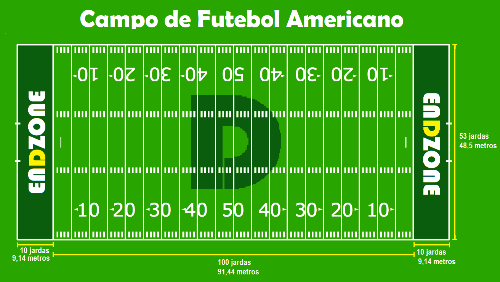

Futebol americano, conhecido nos Estados Unidos simplesmente como football ("futebol", em português), e em alguns outros países de língua inglesa como gridiron football,[2] é um esporte de contato em equipe que surgiu de uma variação do rugby e que recompensa a velocidade, agilidade, capacidade tática e força bruta dos jogadores que se empurram, bloqueiam e perseguem uns aos outros, tentando fazer avançar uma bola em território inimigo durante uma hora de tempo de jogo, que se transforma em três ou quatro de tempo real. É frequente ver no futebol americano uma metáfora para a guerra, com muita violência pessoal e estratégias elaboradas a ter lugar dentro do campo, com jogadores pesados e fortes a empurrar-se mutuamente com cada grama do seu peso, e com uma linha de frente claramente definida, que se move para trás e para a frente ao longo do campo, separando as equipes de ataque e defesa.
Regras
O campo
O campo tem 100 jardas de longitude e 53 jardas de largura (1 jarda tem 91,44 cms) . Linhas brancas demarcam o campo de 10 em 10 jardas para melhor visualização de todos. Marcas menores demarcam o campo de 1 em 1 jarda . Existe no final de cada campo uma área adicional chamada de end zone que possui 10 jardas cada . Um time marca pontos quando atravessa a end zone correndo com a bola ou quando alguém recebe a bola dentro dela .

Tempo
Os jogos da NFL tem 4 quartos de 15 minutos, com um intervalo de 12 minutos no meio do jogo . Intervalos menores de 2 minutos acontecem entre o 1o e 2o quartos e entre o 3o e 4o quartos. Os time invertem a posição de campo a cada fim de quarto .
O 1o e o 3o quartos começam com um kick off, isto é um chute inicial para que aconteça o retorno corrido do time adversário . Já no começo do 2o e 4o quartos o time mantêm a posse de bola do período anterior .
O time de ataque tem 40 segundos para começar a próxima jogada depois do fim da jogada anterior. Ele é penalizado caso não o faça .
O tempo principal só para quando existe um passe incompleto, o jogador sai de campo com a posse de bola ou existe uma penalidade na jogada . O tempo só recomeça quando o juiz recoloca a bola no lugar correto para o começo da próxima jogada .
A posse de bola no começo do jogo é decidido através de um cara ou coroa, o time que começar recebendo o chute inicial (kick off) no 1o quarto, terá que começar o 3o quarto chutando o kick off .
Em caso de empate no tempo normal, existe uma prorrogação de 15 minutos com as mesmas regras, o time que marcar pontos primeiro ganha o jogo .
Os jogadores
Cada time possui 3 unidades diferentes, o time de ataque (ofensivo- time que tem a posse de bola) , o time de defesa (defensivo) e os times especiais que só entram em campo em situações de chute (kick offs, Field goals e punts) . Cada time vai ter sempre 11 jogadores em campo . O futebol americano é um esporte que demanda muita especialização de posição, portanto cada jogador da NFL joga apenas em uma unidade e geralmente exerce apenas uma função em campo.
Começando o jogo
Uma partida começa sempre através de um chute inicial (kick off) . A bola é colocada em pé em um apoiador na marca de 30 jardas do campo do time defensor, e um chutador (kicker) chuta a bola para o time de ataque adversário . Um jogador do time adversário vai tentar agarrar a bola e retornar o mais longe possível. No ponto onde esse jogador for parado ou sair de campo vai ser o ponto onde vai começar a campanha de ataque . Quando esse jogador recebe a bola na endzone (zona final) ele pode decidir correr com a bola ou ajoelhar-se . No caso do jogador se ajoelhar , a campanha começa na marca de 20 jardas.
Curiosidades
Os fãs da NFL se preparam antes do grande jogo, mas a grande fatia de vendas acontece nos dias após a partida. De acordo com a ADI, a quantidade de produtos da NFL vendidos teve um aumento de 19% antes do Super Bowl de 2016 e de 104% após o jogo;
Ao monitorar a movimentação social antes do jogo, a ADI descobriu que o número médio de menções em redes sociais dobrou (2x) quando o Dallas Cowboys jogou contra o Green Bay Packers, no dia 15 de janeiro. Uma média de 48,5 milhão espectadores sintonizados - 35% superior à média divisional;
Comerciais de trinta segundos para o primeiro Super Bowl, em 1967, custavam meros US$ 42 mil, mas essa média ultrapassou a marca de US$ 1 milhão em 1995 e chegou ao valor recorde de US$ 4,5 milhões em 2015. Já em 2016, a CBS cobrou US$ 5 milhões pelos anúncios, ou seja, US$ 166,6 mil por segundo;
Tabelas
V = Vitórias, D = Derrotas, E = Empates, PCT = porcentagem de vitórias, PF= Pontos feitos, PS = Pontos sofridos